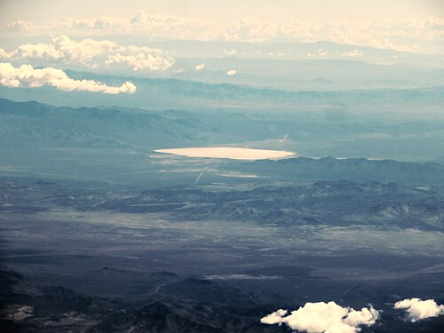

DOSSIER A42-09 // RESTRICTED TESTING RANGE
Area 51 & secret aircraft
The claim
Secrecy around the Nevada test site is taken as evidence of alien craft, extraterrestrial bodies, or technology reverse-engineering.
What the record supports
The U.S. government has used the remote range for classified aircraft and defense testing. Declassified histories connect unusual mid-century sightings in part to high-altitude U-2 and OXCART flights. Restricted access and classified programs are real; public evidence of alien hardware at the site has not been independently verified.
Assessment: A secret test site is not proof of a particular secret. The documented aviation history explains why secrecy and unusual sightings became linked, but does not resolve every report or establish an extraterrestrial program.

.jpg){kind=link}
Useful checks
- Separate confirmed classified aerospace work from unverified stories about non-human technology.
- Require a verifiable artifact, provenance, independent examination, and reproducible analysis for physical claims.
- Treat anonymous testimony as a lead to investigate, not as a substitute for corroboration.
- CIA — The Central Intelligence Agency and Overhead ReconnaissanceDeclassified context for U-2, OXCART, and high-altitude reconnaissance.
- National Museum of the U.S. Air Force — Lockheed U-2Aircraft history and technical context.
- All-domain Anomaly Resolution OfficePublic reports and records concerning UAP claims; review scope and evidence carefully.
Secrecy has a documented aerospace context
Area 51's secrecy is not imaginary: the remote Nevada site was used to test classified aircraft, and official histories describe programs including the U-2 and A-12/OXCART. High-altitude flights could appear unfamiliar to observers in an era when the aircraft and missions were not public. This history gives a grounded explanation for some reports and for restricted access, but it does not explain every individual sighting or prove what was inside every hangar.
The distinction is between evidence of a classified program, which is established, and a claim about non-human hardware, for which no publicly verifiable artifact with secure provenance has been demonstrated. A persuasive artifact claim would need independent access, documented custody, materials analysis with controls, and methods open to replication. Anonymous testimony or an inaccessible photograph can guide investigation but cannot substitute for those tests.